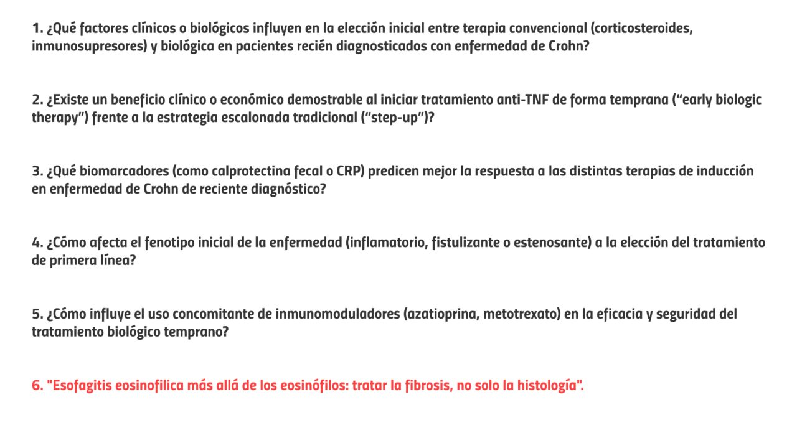
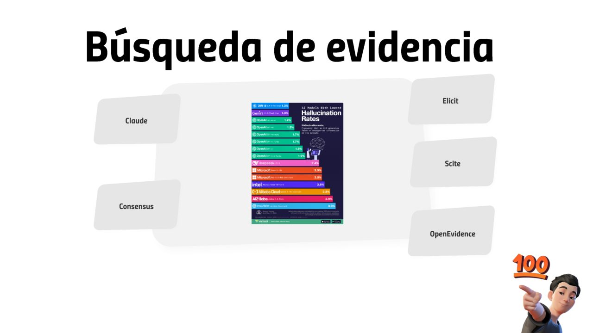
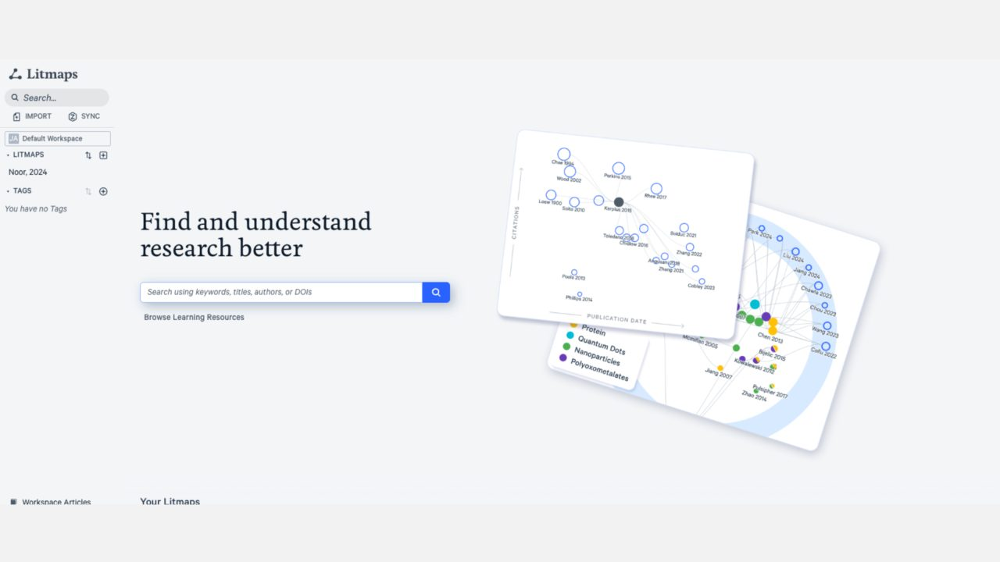

Resumen
La página en blanco es cosa del pasado; la revisión, no
Javier Fuentes plantea la sesión como un encargo: "hagamos un paper". De seis preguntas candidatas se elige una, "Esofagitis eosinofílica más allá de los eosinófilos: tratar la fibrosis, no solo la histología", y se formula en formato PICO. Esa misma pregunta se lanza, tal cual, a una cadena de herramientas con fortalezas distintas: el modo IA de Google y Perplexity para un mapa rápido del tema, Consensus y Elicit para respuestas apoyadas en artículos reales, Litmaps para descubrir por la red de citas lo que se había escapado, y Zotero como biblioteca única de referencias.
Con todo lo recopilado guardado en una carpeta, un Deep Research de ChatGPT consolida las respuestas en un informe integrado que contrasta afirmaciones y verifica cifras. Y con ese material como entrada, la extensión de ChatGPT dentro de Word (modelo GPT-6.1 Sol) redacta en inglés el borrador de una revisión narrativa adaptada a las normas de la Revista Española de Enfermedades Digestivas: resumen, puntos clave, tabla de evidencia, referencias con DOI y declaración de uso de IA. Todos esos documentos intermedios están disponibles más abajo.
La sesión incluyó dos intervenciones de compañeros de la SEPD. José Luis mostró cómo aplica la IA al diseño de ensayos y al análisis de datos, lo que dio pie a tres recomendaciones de Javier: programar con Claude un anonimizador que se ejecuta en local, usar la IA para generar código de análisis determinista que puedas entender y auditar, y empaquetar tu manera de investigar en una skill. Rubén presentó su "segundo cerebro" para investigar en medicina: una síntesis persistente de la bibliografía de un proyecto para que la IA no tenga que releer todos los PDF cada vez.
Si solo te llevas una frase
Lo importante deja de ser el cómo y pasa a ser el qué: qué pregunta quieres responder y cómo vas a comprobar que la respuesta es correcta. Dejaremos de hacer ciertas tareas para convertirnos en revisores de esas tareas.
Ideas fuerza
Doce conceptos para fijar
- Investigación distribuida: una pregunta, muchas herramientas.Ninguna herramienta lo hace todo bien. Se recoge información de varias con fortalezas distintas y después se consolida. El mapa de la sesión son ocho pasos: búsqueda general, evidencia, exploración, Deep Research, biblioteca, redacción, verificación y difusión.
- Empieza por una buena pregunta, en formato PICO.Población, intervención, comparador y resultado. La misma pregunta, con las mismas palabras, se lanzó a todas las herramientas: así las respuestas son comparables y las discrepancias saltan a la vista.
- Los buscadores generalistas dan el mapa, no la evidencia.El modo IA de Google y Perplexity responden en segundos con enlaces. Sirven para orientarse. En la sesión los dos contestaron "sí" a la pregunta, y dieron cifras distintas para el mismo dato: el riesgo anual de estenosis sin tratamiento fue de un 9 % en uno y un 5 % en otro.
- Las herramientas de evidencia matizan.Consensus y Elicit trabajan sobre artículos reales y gradúan la fuerza de la evidencia. Su respuesta fue más prudente: ningún ensayo ha comparado directamente una estrategia antifibrótica con el control histológico aislado. Consensus lo resumió en un 27 % de estudios que dicen "sí" y un 73 % que dicen "posiblemente".
- Elicit responde con un informe, no con un párrafo.Busca sobre más de 138 millones de artículos, criba por criterios explícitos, extrae datos columna a columna y entrega resumen, diagrama de flujo, tabla de estudios y síntesis. Tiene tres profundidades (rápida, normal y profunda) y también busca ensayos clínicos.
- Explora por la red de citas.Litmaps (que absorbió ResearchRabbit) parte de un artículo semilla, por título, autores, palabras clave o DOI, y dibuja los relacionados: más a la derecha los más recientes, más arriba los más citados. Con filtros por revista, índice H o cuartil. Lo que te convence, a Zotero.
- Deep Research también sirve para consolidar.No solo investiga por su cuenta: adjúntale todo lo que has recopilado y pídele un informe integrado. Irá algo más allá y contrastará cifras. Puede tardar de 5 minutos a varias horas, y revisarlo te llevará mucho más que generarlo.
- Redacta donde escribes: ChatGPT o Claude dentro de Word.La extensión actúa como coctelera: mezcla tus documentos recopilados, tu skill de estilo y, si lo tienes, el Excel con resultados, y escribe el borrador directamente en el documento para que lo coedites. Indícale la revista y pídele que siga sus normas.
- Anonimiza sin que el dato toque la nube.Pasar los datos a Claude para que los anonimice es incorrecto. Lo correcto: le das solo las cabeceras del Excel, te programa una herramienta (un fichero HTML) y la ejecutas en tu ordenador, incluso sin conexión, con los datos reales. Puede generar una clave para revertir.
- Para analizar, código determinista que entiendas.La IA puede analizar un dataset directamente, pero el camino más sólido es que te ayude a escribir el código en Python o R: lo lees, lo ejecutas y siempre da el mismo resultado con la misma entrada. Mantienes el criterio y el control científico, y vas mucho más rápido.
- Una skill es un prompt largo que no quieres repetir.Explícale una vez al modelo, hablando, cómo te gusta investigar o redactar, y guárdalo como habilidad. Están en Claude, en ChatGPT y en Copilot. Claude permite además grabarla: registra tu pantalla y tu voz mientras haces la tarea paso a paso.
- De autores a revisores.El estadístico de un hospital tiene más trabajo que nunca porque recibe más ensayos que nunca. El cuello de botella ya no es producir, es comprobar. Por eso el séptimo paso del mapa es la verificación: cada cita existe y dice lo que afirmas.
Recorrido de la sesión
De la pregunta al borrador, con dos intervenciones invitadas
La presentación sigue el tablero de siete paradas. El hilo conductor es siempre la misma pregunta clínica.
Bloque 1 Presentación: hagamos un paper
- El contexto. Sam Altman, en "Abundant Intelligence": con diez gigavatios de cómputo, quizá la IA encuentre cómo curar el cáncer. La investigación es uno de los terrenos donde más se va a notar.
- Seis preguntas candidatas. Cinco sobre enfermedad de Crohn de reciente diagnóstico (elección entre terapia convencional y biológica, anti-TNF temprano frente a step-up, biomarcadores predictores, fenotipo inicial, inmunomoduladores concomitantes) y una sexta, la elegida: "Esofagitis eosinofílica más allá de los eosinófilos: tratar la fibrosis, no solo la histología".
- La pregunta, en PICO. En pacientes con esofagitis eosinofílica (P), ¿las estrategias terapéuticas que consiguen reducir el remodelado fibrótico esofágico (I), en comparación con aquellas que logran únicamente el control de la inflamación histológica (C), mejoran la función esofágica y reducen las complicaciones fibroestenóticas a largo plazo (O)?

Bloque 2 Búsquedas por Internet: la nueva forma de buscar
- Modo IA de Google, Perplexity y ChatGPT. Buscadores conversacionales que devuelven una respuesta redactada con enlaces. Son el primer paso: un mapa rápido del tema.
- Lo que contestaron. Google respondió con un "sí" rotundo, una tabla que compara el control inflamatorio estándar con las estrategias de impacto antifibrótico y una oferta de ayuda para definir desenlaces subrogados. Perplexity respondió "sí, con una matización importante": la evidencia comparativa directa es limitada y la fibrosis establecida solo es parcialmente reversible.
- La lección. Los dos citan fuentes, los dos suenan seguros y no coinciden en un dato tan concreto como el aumento anual del riesgo de estenosis. Sirven para arrancar, no para citar.
Bloque 3 Búsqueda de evidencias
- Las cinco de la diapositiva. Claude (con el conector de PubMed activado), Consensus, Elicit, Scite y OpenEvidence. También se mencionó Vera Health.
- Consensus, dos veces. La primera respuesta fue una síntesis con la fuerza de la evidencia de cada afirmación. La segunda añadió el medidor de consenso: sobre 11 estudios, 27 % "sí" y 73 % "posiblemente", y ningún "no". Ambas se exportaron a PDF, y Zotero hizo de biblioteca del proyecto.
- Elicit. Se dejó trabajando durante el descanso y devolvió un informe de 13 páginas: 50 artículos recuperados, criterios de cribado por población, intervención, desenlaces, comparador, diseño y seguimiento, columnas de extracción de datos y una conclusión clara: con los datos observacionales existentes no se puede determinar si tratar la fibrosis como objetivo propio aporta un beneficio adicional.
- Tasas de alucinación. Los modelos se equivocan cada vez menos (en torno al 1-2 % en los mejores), pero una herramienta especializada que enlaza cada afirmación con su artículo permite comprobarla.

Intervención invitada José Luis: la IA en el diseño de ensayos y el análisis de datos
Un compañero de la SEPD mostró cómo ha empezado a aplicar la IA a su propia investigación: el tratamiento cuidadoso de los datos, el uso del modelo para generar el código de análisis y un prompt muy largo en el que ha volcado sus criterios y su forma de hacer las cosas. Javier lo subrayó como lo más valioso de la formación: ver a un compañero que ya lo aplica. De esa intervención salieron las recomendaciones del bloque siguiente.
Tras el descanso Datos, análisis y skills: los consejos de Javier
- Anonimizar en local. Coge tu Excel, borra los datos y deja las cabeceras. Pásale esa estructura a Claude o ChatGPT y pídele un programa anonimizador que corra en tu ordenador. Te devuelve un fichero HTML: lo abres sin conexión, le pasas el Excel real y anonimiza. Claude solo ha visto la estructura, nunca el dato.
- Código determinista. Que la IA te ayude a escribir el análisis en Python o R, no que lo haga a ciegas. Un código que entiendes, que ejecutas y mejoras, y que siempre da el mismo resultado.
- Hipótesis a partir de un dataset. Pásale a un modelo frontera un conjunto de datos anonimizado y pregúntale qué experimentación o qué hipótesis podrías plantear. Son muy buenos detectando patrones.
- Skills. Un prompt complejo que has construido conversando se guarda como habilidad para no repetirlo. En Claude, además, "grabar una skill": el modelo registra pantalla y voz mientras explicas la tarea como se la explicarías a un residente.
- Usa el modelo más potente que tengas. Para investigación y datos, herramientas generalistas (ChatGPT, Claude, Gemini) con su modelo más alto, sobre todo en la primera pregunta. No hace falta configuración especial: basta ponerse a preguntar.
- Más tiempo al qué y a la comprobación. Qué quieres comprobar, verificar o invalidar, y cómo sabrás que el resultado es correcto. Repite con IA un análisis que ya hiciste y compara criterios.
Bloque 4 Exploración de literatura
- De ResearchRabbit a Litmaps. ResearchRabbit fue adquirida por Litmaps. Le das palabras clave, un título, autores o un DOI y construye un mapa de artículos relacionados buscando citas y referencias.
- Cómo leer el mapa. Eje horizontal: fecha de publicación. Eje vertical: número de citas. Filtros por título, autores, revista, índice H y cuartil.
- Para qué. Poblar tu biblioteca de Zotero con lo relevante y usarlo como radar: en los planes de pago avisa cada semana de artículos nuevos sobre tu tema. Tiene plan gratuito. No es IA pura, es una herramienta de exploración.

Bloque 5 Deep Research para consolidar y ChatGPT en Word para redactar
Javier desanda el camino y guarda en una carpeta cada respuesta: la de Google y la de Perplexity pegadas en un documento, las dos de Consensus exportadas a PDF y el informe de Elicit. En ChatGPT activa Investigación avanzada, adjunta los cinco documentos y pide: "ayúdame a consolidar toda esta información en un informe integrado". Mientras trabaja, abre Word, despliega la extensión de ChatGPT, elige GPT-6.1 Sol con razonamiento medio, adjunta los mismos archivos y pide el borrador de una publicación para la Revista Española de Enfermedades Digestivas, siguiendo sus normas y en inglés. El modelo escribe directamente sobre el documento. El resultado, documento a documento, más abajo.
Intervención invitada Rubén: un segundo cerebro para investigar en medicina
El problema: carpetas llenas de PDF y resúmenes que, un mes después, ya no sabes dónde están; y una IA a la que hay que volver a cargar todos los documentos y pedir el mismo resumen cada vez. La solución que Rubén adoptó, y que usa en una de las tesis que dirige, es un segundo cerebro: una síntesis persistente de la información del proyecto, de modo que la IA parte de esa síntesis en lugar de releer todos los PDF desde cero. Se gana en orden, en continuidad y en consumo de tokens. "El saber no ocupa lugar, pero hay que recordar dónde y cómo lo hemos guardado."
Bloques 6 y 7 Difusión y cierre
- El octavo paso del mapa. Figuras, póster y presentación con Gamma y Napkin. Se trabajarán con detalle en el módulo de generación multimedia.
- Chat y Cowork se funden. La distinción entre conversar y dejar que el modelo use tu ordenador "tiene los días contados": todo será un asistente que, con permiso, accede a tus herramientas y ficheros. Ya existe Copilot Cowork. En hospitales tardará más.
La cadena, documento a documento
La misma pregunta, cinco respuestas y un borrador
Estos son los documentos reales generados durante la sesión. Léelos en orden: cuanto más rigurosa es la herramienta, más prudente es la respuesta.
Material de ejemplo generado por IA, sin revisar
Se publican para ver cómo funciona la cadena, no como fuente clínica. Contienen afirmaciones y cifras que nadie ha verificado contra los artículos originales. No los cites ni los uses para tomar decisiones.
| Paso | Herramienta | Qué respondió a la pregunta PICO | Documento |
|---|---|---|---|
| 1 · Búsqueda | Google, modo IA | "Sí." Revertir el remodelado se asocia con mejor distensibilidad y menos complicaciones. Tabla comparativa de enfoques. Cifra el aumento del riesgo de estenosis en un 9 % por año sin tratamiento. | |
| 1 · Búsqueda | Perplexity | "Sí, con una matización importante." La evidencia comparativa directa es limitada y la fibrosis establecida es solo parcialmente reversible. Cifra el mismo riesgo en un 5 % por año. | |
| 2 · Evidencia | Consensus | "La evidencia no permite separar limpiamente ambas estrategias." Ningún ensayo las ha comparado directamente. Medidor de consenso sobre 11 estudios: sí 27 %, posiblemente 73 %. Fuerza de la evidencia: moderada. | No se redistribuye (licencia de uso personal) |
| 2 · Evidencia | Elicit | "No puede determinarse con los datos observacionales existentes." El control histológico reduce estenosis (HR 0,232; IC 95 % 0,084-0,64), pero no hay estudios que aíslen el efecto antifibrótico. Informe con diagrama de flujo y tabla de extracción. | PDF · 13 págs. |
| 4 · Deep Research | ChatGPT, investigación avanzada | "Solo se dispone de evidencia indirecta." Informe integrado que contrasta las cinco fuentes, señala que el HR agrupado de 0,34 tiene un intervalo de 0,08 a 1,49 que incluye la unidad, y añade resultados recientes del ensayo REMODEL con dupilumab. | |
| 6 · Redacción | ChatGPT en Word GPT-6.1 Sol |
"La respuesta defendible no es un sí incondicional." Revisión narrativa en inglés para la REED: resumen de 179 palabras, texto de unas 1.700, resumen para pacientes, puntos clave, tabla de evidencia, 13 referencias con DOI y declaración de uso de IA. | Word |
🔍 La discrepancia del 9 % y el 5 %
Dos buscadores, la misma pregunta, dos cifras distintas para el mismo dato, las dos con cita. El borrador final, tras contrastar con el estudio original de Schoepfer, evita ambas: dice que la cohorte muestra más estenosis a mayor retraso diagnóstico, pero que no cuantifica el riesgo anual de un paciente concreto.
🧾 Lo que el borrador hace bien
Se declara revisión narrativa y no sistemática, trata los informes de IA como pistas y no como fuentes, deja entre corchetes lo que solo pueden rellenar los autores (afiliaciones, conflictos de interés, contribuciones) e incluye la declaración de uso de IA que hoy exigen las revistas.
⚠️ Lo que queda por hacer
Todo lo importante. Comprobar cada una de las 13 referencias y cada cifra, en especial los resultados de REMODEL, que el modelo incorporó por su cuenta. Limpiar las marcas internas de cita que deja la exportación del Deep Research. Y decidir si la interpretación es la tuya.
Diapositivas clave
Las imágenes que conviene recordar
Selección de la presentación de 42 diapositivas. Haz clic para verlas a tamaño completo o descarga el PDF íntegro.
Herramientas y recursos
Una herramienta para cada paso
Ordenadas según el mapa "Del buscador al paper". Las etiquetas indican el paso y el coste orientativo.
Perplexity
Buscador conversacional que responde con una síntesis y enlaces a las fuentes.
En clase: respuesta estructurada en PICO con tabla de estrategias y un matiz honesto sobre los límites de la evidencia. Para orientarse, no para citar.
perplexity.aiGoogle, modo IA
La respuesta generativa del buscador de Google, con citas numeradas y preguntas de seguimiento.
En clase: punto de partida de la cadena. Respondió con rotundidad y ofreció ayuda para definir desenlaces subrogados y localizar ensayos.
google.comConsensus
Buscador científico con IA: sintetiza lo que dicen los artículos, gradúa la fuerza de la evidencia y muestra un medidor de consenso. Exporta a PDF y envía referencias a Zotero.
En clase: dos consultas con la misma pregunta. La exportación es de uso personal y no puede redistribuirse.
consensus.appElicit
Asistente de investigación que devuelve un informe: búsqueda semántica sobre más de 138 millones de artículos, cribado, extracción de datos y síntesis. También hace revisiones sistemáticas y busca ensayos clínicos.
En clase: informe de 13 páginas en modo rápido durante el descanso. Hay modo normal y profundo.
elicit.comScite
Asistente con respuestas citadas que indica si los artículos posteriores apoyan, contradicen o solo mencionan cada trabajo.
Para qué: comprobar que una cita dice lo que afirmas y cómo ha sido recibida por la literatura.
scite.aiClaude con PubMed
Claude permite activar un conector de PubMed para que busque y cite directamente en la base de datos.
Además: es donde Javier propone programar el anonimizador, generar el código de análisis y crear o grabar skills.
claude.aiOpenEvidence · Vera Health
Asistentes de evidencia clínica para profesionales. OpenEvidence tiene acuerdos con NEJM y JAMA; Vera Health es la alternativa que varios alumnos recomendaron en el módulo 2.
Matiz: el acceso a OpenEvidence desde Europa es limitado. Vera Health se mencionó como opción disponible.
vera.healthLitmaps
Mapa visual de artículos relacionados a partir de un artículo semilla, por la red de citas y referencias. Absorbió ResearchRabbit.
En clase: demo con un artículo sobre la historia natural de la enfermedad. Filtros por revista, índice H y cuartil; avisos semanales en los planes de pago.
litmaps.comDeep Research
El modo de investigación avanzada de ChatGPT, Gemini, Claude y Copilot. Hace búsquedas por su cuenta y devuelve un informe largo con fuentes.
En clase: usado para consolidar. Se le adjuntaron las cinco respuestas previas y se le pidió un informe integrado. De 5 minutos a varias horas.
chatgpt.comZotero
Gestor de referencias de código abierto. Tus artículos en un solo sitio, organizados por carpetas, con citas automáticas en Word.
En clase: destino de lo encontrado en Consensus y Litmaps. También sirve para verificar: si la referencia no aparece en ninguna base, sospecha.
zotero.orgChatGPT en Word · Claude en Word
Extensiones que abren el asistente en un panel dentro de Word. Admiten archivos adjuntos y skills, y escriben directamente en el documento.
En clase: GPT-6.1 Sol con razonamiento medio redactó el borrador para la REED a partir de los cinco documentos recopilados.
chatgpt.comSkills
Habilidades reutilizables: instrucciones detalladas sobre cómo haces una tarea, guardadas para invocarlas cuando quieras. En Claude, ChatGPT y Copilot.
Ejemplos: tu estilo de redacción científica, tus criterios para diseñar un ensayo, tu forma de limpiar un Excel. En Claude se pueden grabar con pantalla y voz.
claude.aiPubMed
La base de datos de referencia. El último filtro de toda la cadena.
Para qué: confirmar que cada artículo citado existe, que los autores, el año y el DOI coinciden, y leer al menos el resumen de lo que sostiene tus afirmaciones clave.
pubmed.ncbi.nlm.nih.govGamma · Napkin
Gamma genera presentaciones a partir de un texto; Napkin convierte párrafos en figuras y esquemas.
Para qué: el resumen visual, el póster y las diapositivas del congreso. Se verán con detalle en el módulo de generación multimedia.
gamma.appPráctica guiada
De tu pregunta a tu borrador, en una tarde
Reproduce la cadena de la sesión con una pregunta de tu área. Bastan las versiones gratuitas para casi todo; el Deep Research y la extensión de Word pueden requerir un plan de pago. No uses datos de pacientes en ningún paso.
Parte A · Del buscador al borrador
- Formula tu pregunta en PICO y escríbela una sola vez. La vas a pegar idéntica en todas las herramientas. Crea una carpeta para el proyecto.
- Búsqueda general. Pégala en Perplexity y en el modo IA de Google. Guarda cada respuesta en un documento dentro de la carpeta. Anota en qué coinciden y en qué no.
- Evidencia. Pégala en Consensus y exporta la respuesta a PDF. Pégala en Elicit, elige Research report y déjalo trabajar. Guarda el informe.
- Biblioteca. Envía a Zotero las referencias que te parezcan relevantes, en una carpeta con el nombre del proyecto.
- Exploración. Toma el artículo más importante que haya aparecido, pega su DOI en Litmaps y recorre el mapa. Añade a Zotero lo que se te había escapado.
- Consolidación. En ChatGPT, Gemini o Claude activa la investigación avanzada, adjunta todos los documentos de la carpeta y pide un informe integrado que contraste las fuentes y verifique las cifras clave.
- Redacción. Abre Word, despliega la extensión de ChatGPT o Claude, adjunta el informe integrado y los documentos, indica la revista de destino y pide el borrador siguiendo sus normas.
- Verificación. Para cada referencia del borrador: búscala en PubMed, comprueba autores, año y DOI, y lee el resumen. Para cada cifra: localízala en el artículo original. Lo que no puedas confirmar, fuera.
Parte B · Tu anonimizador en local
- Haz una copia de tu Excel y borra todas las filas de datos. Deja solo la fila de cabeceras.
- Sube esa plantilla vacía a Claude o ChatGPT y pídele un programa anonimizador en un único fichero HTML que funcione sin conexión (tienes el prompt más abajo).
- Descarga el fichero. Desconecta la wifi si quieres comprobarlo. Ábrelo en el navegador y cárgale el Excel con datos reales.
- Revisa el resultado: ¿queda algún identificador directo o indirecto (fechas exactas, códigos postales, texto libre)? Si es así, vuelve al modelo con la estructura, nunca con los datos, y pide el ajuste.
- Guarda en lugar seguro la clave de correspondencia si necesitas poder revertir.
Lo que pasó en clase
Los dos buscadores generalistas contestaron "sí". Consensus matizó. Elicit concluyó que no puede determinarse. El informe integrado habló de evidencia indirecta. Y el borrador final cerró con que "la respuesta defendible no es un sí incondicional". La cadena no solo acumula información: va afinando la pregunta.
Prompts para copiar
Los prompts de la sesión, listos para pegar
Redactados a partir de lo que se dijo y se hizo en clase. Sustituye lo que va entre corchetes.
En pacientes con esofagitis eosinofílica (P), ¿las estrategias terapéuticas que consiguen reducir el remodelado fibrótico esofágico (I), en comparación con aquellas que logran únicamente el control de la inflamación histológica (C), mejoran la función esofágica y reducen las complicaciones fibroestenóticas a largo plazo (O)?
Necesito que me ayudes a programar una herramienta de anonimización que pueda ejecutar localmente en mi ordenador, sin conexión a internet. Te adjunto un Excel SIN DATOS: solo contiene la fila de cabeceras. Ese es exactamente el formato de los ficheros que le pasaré al programa. Prepárame un único fichero HTML que: - Me deje cargar un Excel o CSV con esa estructura. - Sustituya los identificadores directos (nombre, apellidos, NHC, DNI, teléfono, correo) por códigos. - Generalice los indirectos (fechas a mes/año o a días desde el inicio, edad en tramos, código postal recortado). - Me avise de las columnas de texto libre, que tendré que revisar a mano. - Me deje descargar el fichero anonimizado y, aparte, una tabla de correspondencia por si necesito revertirlo. - No envíe ningún dato a ningún servidor. Antes de programar, pregúntame qué columnas considero identificadoras y cuáles necesito conservar para el análisis.
Te adjunto un conjunto de datos ANONIMIZADO de [describir: pacientes, periodo, variables principales]. En base a estos datos, ¿qué hipótesis podría plantear y qué tipo de análisis o experimentación me permitirían contrastarlas? Para cada propuesta indica: la pregunta, las variables implicadas, el análisis adecuado, las limitaciones de este dataset para responderla y qué dato adicional la haría más sólida. Ordénalas de más a menos viable.
Quiero analizar este dataset anonimizado para responder a: [PREGUNTA]. No hagas tú el análisis directamente. Ayúdame a escribir el código en [Python / R] para que yo lo ejecute. - Explica antes el plan de análisis y por qué eliges cada prueba. - Escribe el código comentado, paso a paso, de forma que pueda entender cada decisión. - Señala los supuestos de cada prueba y cómo comprobarlos. - El código debe dar siempre el mismo resultado con la misma entrada (fija las semillas si hay aleatoriedad). - Si te falta información sobre el diseño del estudio, pregúntamela antes de escribir nada.
[Activa "Investigación avanzada" / "Deep Research" y adjunta todos los documentos de la carpeta] Ayúdame a consolidar toda esta información en un informe integrado. Te adjunto lo que he encontrado en mi investigación con varias herramientas sobre esta pregunta: [PEGAR PREGUNTA PICO]. - Contrasta las afirmaciones de las distintas fuentes y señala dónde discrepan. - Verifica las cifras clave contra la literatura primaria. - Evalúa la calidad de la evidencia y los posibles sesgos. - Distingue lo demostrado, lo asociado y lo que no se ha estudiado. - Incluye una tabla comparativa de los estudios principales y la lista de referencias con DOI.
[En la extensión de ChatGPT o Claude en Word, con los documentos recopilados adjuntos y, si la tienes, tu skill de estilo] Hazme el borrador de una publicación sobre esta temática para la revista [NOMBRE DE LA REVISTA]. Asegúrate de seguir las normas de publicación de la revista y hazlo en inglés. Usa los informes adjuntos como pistas, no como fuentes: cita los artículos originales. Deja entre corchetes todo lo que deban completar los autores (afiliaciones, contribuciones, conflictos de interés, financiación) e incluye la declaración de uso de IA.
Quiero crear una skill con mi forma de [redactar artículos científicos / diseñar un ensayo / analizar una base de datos]. Te voy a explicar cómo lo hago, con mis criterios y preferencias: [EXPLICAR, mejor por voz y con todo el detalle posible, como a un residente]. Hazme las preguntas que necesites para que no quede nada ambiguo. Después redacta la skill con: cuándo debe usarse, los pasos en orden, mis criterios de calidad, lo que nunca debe hacer y el formato del resultado. Guárdala para que pueda invocarla en futuras conversaciones.
Te adjunto el borrador de mi manuscrito. Revisa las referencias una a una. Para cada referencia, busca el artículo original y dime: 1. Si existe y si autores, revista, año, volumen y DOI son correctos. 2. La frase del manuscrito que se apoya en ella. 3. Si el artículo sostiene realmente esa afirmación, con la cifra exacta y su intervalo de confianza. 4. Tu veredicto: correcta / imprecisa / no la sostiene / no he podido comprobarla. No des por buena ninguna que no hayas podido abrir. Devuélvelo en una tabla y lista aparte las que debo revisar yo personalmente.
Reglas de oro
Investigar con IA sin perder el control científico
El dato nunca toca la nube
Anonimiza en tu equipo con una herramienta que la IA programó viendo solo las cabeceras. A partir de ahí, solo datos procesados y anonimizados.
Cada cita existe y dice lo que afirmas
Comprueba todas las referencias y todas las cifras contra el artículo original. Dos buscadores dieron dos valores distintos para el mismo dato.
Código que entiendes
Para el análisis, código determinista generado con ayuda de la IA, leído y ejecutado por ti. Mismo dato, mismo resultado.
Los informes de IA son pistas
Un Deep Research o una respuesta de Consensus te llevan a los artículos. Lo que se cita es el artículo, no el informe.
Declara el uso de IA
Las revistas lo exigen. Qué herramienta, para qué, y que la responsabilidad es de los autores humanos.
El modelo más potente para lo más importante
En la primera pregunta de una investigación, usa el modelo más alto que tengas. La diferencia se nota.
Permisos, con cautela
Si das acceso a tu ordenador a un asistente, acótalo a una carpeta y decide herramienta a herramienta. Nada sensible a su alcance.
Dedica el tiempo al qué
Qué quieres comprobar y cómo sabrás que es correcto. El cómo ya lo acelera la máquina.
Preguntas del chat
Lo que preguntaron los alumnos y lo que se respondió
¿El análisis que hacen estos modelos es equiparable al de un estadístico?
"Hace un año te hubiera dicho que no. Ahora te digo que sí, o más." Para un médico que no sea especialista en estadística, lo supera ampliamente, y ya compite con estadísticos especializados en precisión y fiabilidad. Toma decisiones técnicas sofisticadas que se pueden ver en el código que genera. Aun así, no hay que fiarse al cien por cien: que lo revise el estadístico. Prueba a repetir un análisis que ya hiciste y compara.
El gran tema es el RGPD. ¿Es segura la anonimización con Claude?
En el método propuesto no hay ningún contacto entre los datos y Claude. Claude solo ve la estructura del Excel, sin datos, y devuelve un programa en HTML. Ese programa se ejecuta en un ordenador que puede estar sin conexión, y es ahí donde se le pasa el Excel real. Claude hace el programa que anonimiza, pero no toca el dato.
¿Con Claude y artefactos es mejor el juego de preguntar a los datos?
Para explorar basta con poner los datos y preguntar: no hacen falta artefactos. Los artefactos son útiles cuando pides una representación o una herramienta interactiva. Para la primera pregunta, usa el modelo más sofisticado que tengas.
No me aparece Cowork como opción en Claude. ¿Qué diferencia hay con el chat?
Es una distinción con los días contados. Chat y Cowork se van a diluir en una sola plataforma que, cuando lo necesite y con tu permiso, usará herramientas y datos de tu ordenador. En ChatGPT parece que ya se han fusionado; Claude, Gemini y Copilot seguirán. No merece la pena preocuparse por la diferencia.
¿Permitir ese acceso al ordenador puede ser peligroso?
Siempre que se da acceso a herramientas o ficheros se corre algún riesgo. Se puede decidir uno a uno: correo sí o no, calendario sí o no, Drive sí o no, y limitar el acceso a una carpeta concreta. Javier lo tiene activado en un ordenador de trabajo sin nada sensible. En el ámbito hospitalario la implantación será más lenta, aunque ya existe Copilot Cowork.
¿Qué herramientas usar para la parte de analítica de datos?
Los modelos frontera generalistas: ChatGPT, Claude o Gemini. No hace falta una configuración específica ni conocimientos especiales. Coges datos anonimizados y te pones a preguntar, pedir sugerencias y hacer cálculos, fijándote en cómo responde. Por detrás usan Python para calcular.
¿Hacer una skill es difícil?
No. Técnicamente consiste en explicarle al modelo, hablando, cómo quieres hacer una tarea por compleja que sea, y guardarlo. Hace un año ni se mencionaban en el curso y hoy se habla de ellas como si llevaran toda la vida. En Claude, además, se puede grabar una skill con pantalla y voz.
Glosario
Los términos que aparecieron en la sesión
- PICO
- Formato para preguntas clínicas: población, intervención, comparador y resultado (outcome).
- Investigación distribuida
- Recoger información de varias herramientas con fortalezas distintas y consolidarla después.
- Modo IA (Google)
- Respuesta generativa del buscador, redactada y con enlaces, en lugar de la lista de resultados.
- Medidor de consenso
- Indicador de Consensus que resume qué proporción de los estudios responde sí, posiblemente, mixto o no a una pregunta.
- Fuerza de la evidencia
- Graduación (fuerte, moderada, débil) que una herramienta asigna a cada afirmación según los estudios que la apoyan.
- Informe de investigación (Elicit)
- Documento con resumen, búsqueda, cribado, extracción de datos, resultados y síntesis, generado a partir de una pregunta.
- Cribado (screening)
- Selección de los artículos que cumplen los criterios de inclusión antes de extraer datos.
- Artículo semilla
- El trabajo de partida desde el que Litmaps construye el mapa de artículos relacionados.
- Red de citas
- Relaciones entre artículos según a quién citan y quién los cita. Permite descubrir lo que una búsqueda por palabras no encuentra.
- DOI
- Identificador digital único y permanente de un artículo. La forma más fiable de localizarlo.
- Índice H y cuartil
- Indicadores bibliométricos de un autor o revista, usados como filtros en la exploración.
- Gestor de referencias
- Programa (Zotero) que guarda, organiza y cita tu bibliografía.
- Deep Research
- Modo de investigación avanzada: el modelo busca, lee y contrasta durante minutos u horas y devuelve un informe con fuentes.
- Consolidación
- Unir en un solo informe lo recopilado con varias herramientas, contrastando afirmaciones y cifras.
- Revisión narrativa
- Síntesis crítica de la literatura sin búsqueda exhaustiva ni metaanálisis. Distinta de una revisión sistemática.
- Declaración de uso de IA
- Apartado del manuscrito donde se indica qué herramienta se usó y para qué. La responsabilidad sigue siendo de los autores.
- Anonimización
- Eliminar o transformar los datos que permiten identificar a una persona, de forma directa o indirecta.
- Identificador indirecto
- Dato que por sí solo no identifica pero combinado con otros sí: fecha exacta, código postal, edad, texto libre.
- Ejecución en local
- El programa corre en tu ordenador y no envía datos a ningún servidor. Funciona sin conexión.
- Código determinista
- Programa que con la misma entrada da siempre el mismo resultado, a diferencia de la respuesta de un modelo generativo.
- Skill (habilidad)
- Conjunto de instrucciones reutilizable que describe cómo haces una tarea, guardado para invocarlo cuando quieras.
- Grabar una skill
- Función de Claude que registra tu pantalla y tu voz mientras realizas la tarea y genera la habilidad a partir de ello.
- Conector
- Enlace entre el asistente y una fuente externa (PubMed, Drive, correo) para que busque en ella directamente.
- Cowork
- Modo en que el asistente, con permiso, usa herramientas y ficheros de tu ordenador para completar tareas.
- Segundo cerebro
- Sistema personal de notas y síntesis que conserva el conocimiento de un proyecto para ti y para la IA, sin releer cada fuente.
- Modelo frontera
- Los modelos más capaces del momento. Para investigación y análisis, el más alto que tengas.
- Hazard ratio e intervalo de confianza
- Medida de riesgo relativo en el tiempo y su margen de incertidumbre. Si el intervalo incluye el 1, no hay diferencia demostrada.
Autoevaluación
Ocho preguntas para fijar ideas
No cuenta para la acreditación (el cuestionario oficial es único, al final de los ocho módulos). Elige una opción y verás la explicación.
1 ¿Cuál es la forma correcta de anonimizar un Excel con ayuda de la IA?
2 Para el análisis estadístico de tu estudio, el camino más sólido es…
3 Una skill es…
4 ¿Qué hace Litmaps?
5 En la sesión, Deep Research se usó sobre todo para…
6 Google respondió que el riesgo de estenosis sube un 9 % por año sin tratamiento y Perplexity que un 5 %. ¿Qué haces?
7 "El estadístico del hospital tiene más trabajo que nunca." ¿Qué ilustra la anécdota?
8 Al redactar con ChatGPT o Claude dentro de Word, ¿qué le pasas para obtener un buen borrador?
Referencias
Para profundizar
- Altman, S. (2025). Abundant Intelligence. El texto citado al inicio de la sesión.
- Revista Española de Enfermedades Digestivas. Normas para autores. La revista elegida para orientar el borrador.
- ICMJE. Recomendaciones, incluido el uso de IA en la preparación de manuscritos.
- Dellon, E. S. et al. (2025). ACG Clinical Guideline: Diagnosis and Management of Eosinophilic Esophagitis. Am J Gastroenterol 120:31-59. La guía de referencia que citan todas las herramientas.
- Schoepfer, A. M. et al. (2013). Delay in diagnosis of eosinophilic esophagitis increases risk for stricture formation in a time-dependent manner. Gastroenterology 145:1230-6. El origen de la cifra discutida.
- Nicodème, F. et al. (2013). Esophageal distensibility as a measure of disease severity in patients with eosinophilic esophagitis. Clin Gastroenterol Hepatol 11:1101-7.
- Documentación de Zotero y Litmaps.
- AEPD. Orientaciones y garantías en los procedimientos de anonimización de datos personales, disponible en aepd.es.
Siguiente sesión
Prepárate para el Módulo 4
🗓️ Módulo 4 · La IA en el diagnóstico · 11 de diciembre
Con el Dr. Javier Mendoza. Modelos razonadores y de frontera aplicados a casos clínicos anonimizados, y aplicaciones en enfermedad inflamatoria intestinal. Se retomará el análisis de datos y se verá cómo usar modelos de código abierto en local.
🖥️ Deberes opcionales
- Recorre la cadena completa con una pregunta de tu área y guarda los documentos.
- Programa tu anonimizador y pruébalo con una hoja ficticia.
- Crea tu primera skill.
💬 Dudas entre sesiones
Formulario de la organización o formacion@sepd.es. Se resuelven al inicio de la siguiente clase.

 Escanéame
Escanéame